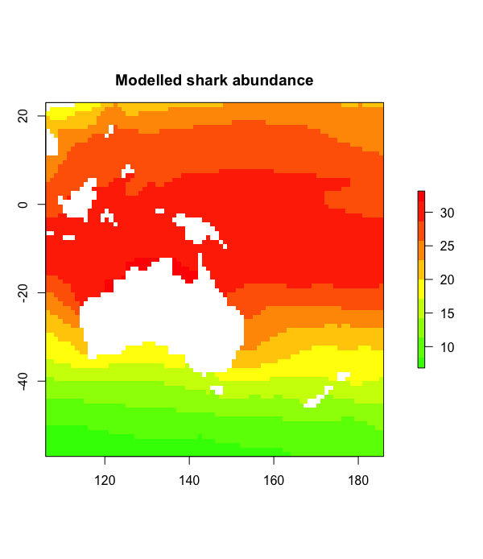

This tutorial is focused on introducing the bascis of what a raster is, and then how to get raster data into R and do some basic manipulation. If you just need to make a pretty site location map, or something similar, then you might be best starting with this tutorial.
Let’s get set up first
Check if you can see the data we’ll be using (your working directory should be this file’s location)
file.exists("Cairns_Mangroves_30m.tif")
file.exists("SST_feb_2013.img")
file.exists("SST_feb_mean.img")
Install the packages we’re going to need - the raster package is the key library for raster objects in R, dismo has some nice wrappers for various sampling functions (plus some other neat SDM related stuff), and rgdal has a lot of the drivers for reading and writing various spatial data formats
install.packages(c('raster', 'dismo','rgdal'))
Check that you can load them
library(raster)
library(dismo)
library(rgdal)
What is a raster?
Now we’re ready to go, but firstly, what is a raster? Well, simply, it is a grid of coordinates for which we can define certain values across, and we display the corresponding grid elements according to those values. The raster data is essentially a matrix, but a raster is special in that we define what shape and how big each grid element is, and usually where the grid should sit in some known space (i.e. a geographic projected coordinate system).

Understanding Raster Data
Make a raster object, and query it
dummy_raster <- raster(ncol = 10, nrow = 10) # let's make a small raster
nrow(dummy_raster) # number of pixels
ncol(dummy_raster) # number of pixels
ncell(dummy_raster) # total number of pixels
plot(dummy_raster) # doesn't plot because the raster is empty
hasValues(dummy_raster) # can check whether your raster has data
values(dummy_raster) <- 1 # give the raster a pixel value - in this case 1
plot(dummy_raster) # entire raster has a pixel value of 1
Make a random number raster so we can see what’s happening a little easier
values(dummy_raster) <- runif(ncell(dummy_raster)) # each pixel is assigned a random number
plot(dummy_raster) # raster now has pixels with random numbers
values(dummy_raster) <- runif(ncell(dummy_raster))
plot(dummy_raster)
dummy_raster[1,1] # we can query rasters (and subset the maxtrix values) using standard R indexing
dummy_raster[1,]
dummy_raster[,1]
Use this to interactively query the raster - press esc to exit
click(dummy_raster)
What’s special about a raster object?
str(dummy_raster) # note the CRS and extent, plus plenty of other slots
crs(dummy_raster) # check what coordinate system it is in, the default in the PROJ.4 format
xmax(dummy_raster) # check extent
xmin(dummy_raster)
ymax(dummy_raster)
ymin(dummy_raster)
extent(dummy_raster) # easier to use extent
res(dummy_raster) # resolution
xres(dummy_raster) # just pixel width
yres(dummy_raster) # just pixel height
Excercises
- make a raster with a smiley face (tip: make a blank raster, then use indexing to change values sequentially)
- extract some vector and matrix data from the raster (tip: use indexing or things like
?as.matrix)
- subset the raster into a smaller chunk (tricker - see
?crop)
Working with real raster data
Import the Cairns mangrove data and have a look at it
mangrove <- raster("Cairns_Mangroves_30m.tif")
crs(mangrove) # get projection
plot(mangrove, col = topo.colors("2")) # note two pixel values, 0 (not mangrove) and 1 (mangrove)
NAvalue(mangrove) <- 0 # make a single binary dataset with mangroves having a raster value 1
plot(mangrove, col = "mediumseagreen")
The legend is a little odd - we can change to a categorical legend by doign this - but we’ll stick to the default continous bar generally so as to reduce clutter in the code
cols <- c("white","red")
plot(mangrove, col = cols, legend = F)
legend(x = 'bottomleft', legend = c("no mangrove", "mangrove"), fill = cols)
Simple processing
agg_mangrove <- aggregate(mangrove, fact = 10) # aggregate/resample cells (10 times bigger)
par(mfrow = c(2,2))
plot(mangrove, col = "mediumseagreen")
plot(agg_mangrove, col = "firebrick")
plot(agg_mangrove, col = "firebrick")
plot(mangrove, col = "mediumseagreen", add = TRUE) # add information to current plot
Create a simple buffer
buf_mangrove <- buffer(agg_mangrove, width = 1000) # add a buffer
plot(buf_mangrove, col = "peachpuff")
plot(mangrove, col = "mediumseagreen", add = T) # note add= argument
Note at this point, we could mess around with the margins if we cared about that, e.g. par(mar = c(2,1,2,1), oma = c(2,1,2,1)).
Convert raster to point data, and then import point data as raster
pts_mangrove <- rasterToPoints(mangrove)
str(pts_mangrove)
par(mfrow = c(2,2))
plot(mangrove)
plot(rasterFromXYZ(pts_mangrove)) # huh?
NAvalue(mangrove) <- -999
pts_mangrove <- rasterToPoints(mangrove)
plot(rasterFromXYZ(pts_mangrove))
NAvalue(mangrove) <- 0 # set it back to 0
dev.off()
Export your data - lets try the aggregated raster
KML(agg_mangrove, "agg_mangrove.kml", overwrite = TRUE)
writeRaster(agg_mangrove, "agg_mangrove.tif", format = "GTiff")
Now, what about multiband rasters? The raster package handles them in the same way, just the nbands() attribute is >1 - think about an array instead of a matrix
multiband <- raster("multiband.tif")
nbands(multiband)
nrow(multiband)
ncol(multiband)
ncell(multiband)
What about making our own multiband raster?
for (i in 1:4) { assign(x = paste0("band",i), value = raster(ncol = 10, nrow = 10)) }
values(band1) <- runif(100); values(band2) <- runif(100); values(band3) <- runif(100); values(band4) <- runif(100)
multiband_stack <- stack(list(band1, band2, band3, band4))
nlayers(multiband_stack)
plot(multiband_stack)
Plotting an RGB image?
plotRGB(multiband_stack, r = 1, g = 2, b = 3)
range(multiband_stack)
plotRGB(multiband_stack, r = 1, g = 2, b = 3, scale = 1) # let it know what the max value is for display
plotRGB(multiband_stack, r = 3, g = 2, b = 1, scale = 1)
plotRGB(multiband_stack, r = 2, g = 3, b = 4, scale = 1)
Other handy processing functions
?crop
?merge
?trim
?interpolate
?reclassify
?rasterToPolygons
Some handy analysis functions
?zonal # zonal statistics
?focal # moving windows
?calc # raster calculator
?distance # distance calculations
?sampleRandom
?sampleRegular
?sampleStratified
We won’t go into detail on coordinate and projection systems today, but very briefly, CRS() and crs() are they key functions/objects
crs(mangrove)
proj4string(mangrove)
latlong <- "+init=epsg:4326"
CRS(latlong)
eastnorth <- "+init=epsg:3857"
CRS(eastnorth)
latlongs_mangrove <- rasterToPoints(mangrove, spatial=T)
latlongs_mangrove
projected_pts_mangrove <- spTransform(latlongs_mangrove, CRS(eastnorth))
projected_pts_mangrove
Excercises
- import the raster “Landsat_TIR.tif” - it’s a TIR (thermal infrared) image from the Landsat 8 satellite captured over a cropping area
- suppose we modelled the TIR values via linear regression to calculate the real on ground temperature, and beta0 was 0.5 and beta1 was 0.1 (i.e. y = 0.1x + 0.5) - make a map of temperature (hint:
?calc, and you’ll need to write a function)
- give the plot a title and axis labels, and colours that make sense for temperature
- make a matching raster (in extent and number of pixels, for the easiest solution) with zone codes (for each pixel), then calulate the mean/sd temperature in those zones (hint:
?values and ?zonal)
Extending raster analyses
Now let’s take a bit of a whirlwind tour of the types of analyses we can do, and hopefully discover a bit deeper understanding of raster analysis in R.
Load up some SST data - Feb 2013 for the globe (as an aside, check this link for more great ocean global data sets:
sst_feb <- raster("SST_feb_2013.img")
plot(sst_feb)

Crop it to the pacific so we can compare our mangrove data
pacific_extent <- extent(mangrove) + 80 # take advantage of the way R handles vector arithmatic!
pacific_extent # check it
sst_feb_crop <- crop(sst_feb, pacific_extent) # crop to the pacific
plot(sst_feb_crop)
Load up the long term mean SST data for Feb
sst_feb_mn <- raster("SST_feb_mean.img")
plot(sst_feb_mn)
sst_mn_crop <- crop(sst_feb_mn, pacific_extent)
plot(sst_mn_crop)
Now let’s make an SST anomoly map
sst_anomaly <- sst_feb_crop - sst_mn_crop # R + {raster} matrix arithmatic
plot (sst_anomaly) # plot the anomaly map
plot(sst_anomaly, col = rev(heat.colors("100"))) # heat colours
contour(sst_anomaly, add = T) # add contours
Query single values,
minValue(sst_anomaly) # coldest pixel
maxValue(sst_anomaly) # warmest pixel
plot(sst_anomaly == maxValue(sst_anomaly))
or plots/stats for the entire image,
plot(sst_anomaly > 1)
par(mar = c(3,3,3,3))
hist(sst_anomaly, main = "February SST Anomaly", xlab = "sst anomaly")
or let’s be a litle more tricky!
max_anom <- which.max(sst_anomaly)
max_xy <- xyFromCell(sst_anomaly, max_anom)
plot(sst_anomaly, col = rev(heat.colors("100")),
main = "2013 Feb SST anomaly + hottest point")
points(max_xy, pch=8, cex=2)

Sampling points conditionally? Sure. We’ll see a better wrapper for this further down though.
xy <- xyFromCell(sst_anomaly, sample(1:ncell(sst_anomaly), 20)) # 20 random points
points(xy)
extract(sst_feb, xy)
Try out ?getValues too. OK, re-capping writing back to disk
# writing rasters
writeRaster(sst_anomaly, "sst_anomaly.tif", format = "GTiff")
KML(sst_anomaly, "sst_anomaly.kml")
save(sst_anomaly, file="sst_anomaly_feb.RData")
save(sst_feb_mn, file="sst_feb_mn.RData") # check the file size, huh?
What’s going on with those last two save() commands? Something else to understand about the way the raster package handles raster files is that for larger rasters, the whole file is not stored in memory, rather it is just a pointer to the file. You can test whether or not it is
inMemory(sst_feb_mn) # R will only access file when needed.
inMemory(sst_anomaly) # it's in memory.
We saw stack() earlier, and we can use it for multi-band imagery, but also to stack up different information sources. brick() works in the same way, except that RasterBrick objects are designed for smaller data, and a RasterBrick can only point to one file, opposed to a RasterStack objects, which can point to multiple files.
sst_stack <- stack(sst_mn_crop, sst_feb_crop, sst_anomaly)
plot(sst_stack)
nlayers(sst_stack)
plot(sst_stack, 2)
names(sst_stack)[3] <- "SST_anomaly"
So we can see why that might be useful for various remote sensing and modelling applicaitons.
Modelling and interpolation
Now let’s look at quick example of what we can do with rasters in context of species distribution modelling and spatial modelling. First lets extract some random points - make sure you’ve run library(dismo)
rpoints_sst <- randomPoints(sst_stack, 500) #?randomPoints for more options
plot(sst_stack, 2)
points(rpoints_sst, pch = 16, cex = 0.7)
sst_samp <- extract(sst_stack, rpoints_sst) # extract values through stack this time
str(sst_samp)
sst_samp <- data.frame(sst_samp,
lat = rpoints_sst[,2], lon = rpoints_sst[,1])
plot(sst_samp$SST_anomaly ~ sst_samp$SST_feb_2013)
#abline(lm(sst_samp$SST_anomaly ~ sst_samp$SST_feb_2013))
#plot(mgcv::gam(sst_samp$SST_anomaly ~ s(sst_samp$SST_feb_2013)), resid = T)
What if we had some real biological data at those points? Well, let’s make some up, and then fit a model to it
sst_samp$shark_abund <- rpois(n = nrow(sst_samp), lambda = round(sst_samp$SST_feb_2013))
plot(sst_samp$shark_abund ~ sst_samp$SST_feb_2013)
shark_glm <- glm(shark_abund ~ SST_feb_2013 + SST_anomaly,
data = sst_samp, family = "poisson")
summary(shark_glm)
We would usually use predict() on a model fit object, and we can use it similarly for predicting out to raster data
head(predict(shark_glm, type = "response"))
shark_predict <- predict(sst_stack, shark_glm, type = 'response')
plot(shark_predict, col = rev(rainbow(n = 10, start = 0, end = 0.3)),
main = "Shark abundance as a function of SST")

Let’s try somethign else, say attack risk. It’s not just about abdundance, something else like how mean or aggressive they are?
sst_samp$shark_aggression <- sst_samp$lat * -1 # so agression goes up with lattitude
sst_samp$shark_attack <- scale(sst_samp$shark_abund * sst_samp$shark_aggression)
attack_lm <- lm(shark_attack ~ SST_feb_2013 + SST_anomaly,
data = sst_samp)
shark_attack <- predict(sst_stack, attack_lm, type = 'response')
plot(shark_attack, col = rev(rainbow(n = 10, start = 0, end = 0.3)),
main = "Shark attack index!")

This is a quick and silly example. If we were less lazy, we might create a new image stack with the abundance predicitons and the lattitude values, pull the random samples out again, and re-fit the model and predictions.
Excercises
- try generating some stats (values or plots) for SST anomaly for different regions, either across the globe or across Australia
- try some band math, or some conditional statements using multiple rasters or a RasterStack
- create another SDM scenario - either using downloaded data, or totally simulated data
- if we just had the physical data at some points, and wanted to make those into a geographically weighted or interpolated SST map? You could sample some of the points then use
library(gstat) to try an IDW (inverse distance weighted) interpolation. Do some interpolations, varying the number of points used, and see how that effects your interpollated product
Some more stuff to investigate
Some of the other commonly used packages for spatial data analysis
library(sp) # used here, but owrht checking out exdlicitly
library(maps)
library(rasterVis)
library(maptools)
library(mapproj)
library(rgeos) # watch proprietory stuff here
You could also try getting bioclim climate data using the getData() function from the raster package, or getting various types of maps using the gmap() function from the dismo package or the map function from the maps package. If you go to the github page for this tutorial, you’ll find some answers to the excercies, plus some extra goodies realting to the above suggestions too.
Author: Mitchell Lyons
Last updated:
## [1] "Mon Jan 24 2022"